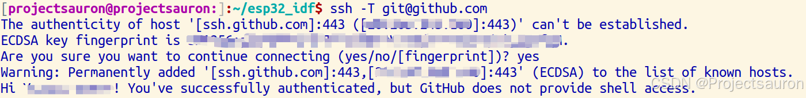
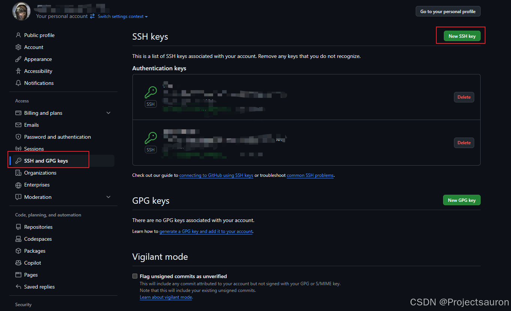
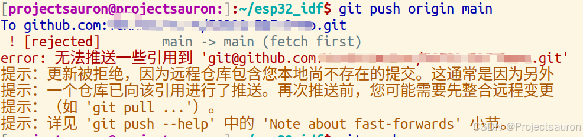
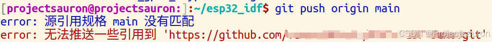

Git 查错记录
[toc]
本文记录本人了最近在 Git 开发遇到的一些问题
一、ssh: connect to host github.com port 22: Connection refused
1 | git pull origin |
遇到这个问题，说明 22 端口可能被防火墙屏蔽了，可以尝试连接 GitHub 的 443 端口。
1 | vim ~/.ssh/config |
修改完 ~/.ssh/config 文件后，使用 ssh -T git@github.com 来测试和GitHub的网络通信是否正常，如果提示 Hi xxxxx! You've successfully authenticated, but GitHub does not provide shell access. 就表示一切正常了。
1 | ssh -T git@github.com |

这个解决方案的思路是：给 ~/.ssh/config 文件里添加如下内容，这样 SSH 连接 GitHub 的时候就会使用 443 端口。
如果
~/.ssh目录下没有 config 文件，新建一个即可。
这个方案有效的前提是：执行命令ssh -T -p 443 git@ssh.github.com后不再提示 connection refused，所以要尝试这个方案的话先执行这条命令测试下。
二、免密登录
HTTPS配置免密登录
如果不配置免密登录，那么每次 git push/pull 时都要输入 username 和 password，很麻烦。
1 | git config --global credential.helper store |
这一步需要输入 username 和 password，后续就不用再次输入
这一步会在用户目录下生成文件 .git-credential 记录用户名密码的信息
- SSH 配置免密登录
shell中输入下列指令（然后一路回车即可），生成公钥：
1 | ssh-keygen -t rsa -C "YOUR_EMAIL" |
此时输出的内容会显示公钥的保存目录，默认是 /home/用户名/.ssh/id_rsa.pub
打开 Github.com -> Settings -> SSH and GPG keys -> New SSH key：
- title：随便取
- Keytype：默认
- Key：将
.ssh对应目录下id_rsa.pub中内容粘贴进去
最后，Add SSH key：

回到 shell 检查配置是否成功：
1 | ssh -T git@github.com |
出现 successfully 就成功了：
1 | Hi <USERNAME>! You've successfully authenticated, but GitHub does not provide shell access. |
三、! [rejected] master -> master (fetch first)

出现这种问题是由于本地仓库与远程仓库存在冲突导致的，一般是由于先有的本地仓库，然后创建远程仓库并用 git remote add 命令进行关联。此时，远程仓库存在 README.md 和 .gitignore 文件，而本地仓库不存在，此时使用 git push 提交命令则会报错，错误如下所示：
1 | git push origin main |
解决方案有两种：
- 使用以下命令：
慎用，如果你是新开的仓库，那就随便折腾，否则有时候很容易把仓库原本的东西覆盖掉
1 | git pull origin master --allow-unrelated-histories |
这两种方式都是强制上传，它会忽略版本不一致等问题，强制将本地库上传的远程库，但是一定要谨慎使用，因为 -f 会用本地库覆盖掉远程库，如果远程库上有重要更新，或者有其他同伴做的修改，也都会被覆盖，所以一定要在确定无严重后果的前提下使用此操作。
这样对本地仓库和远程仓库进行合并冲突后，就可以正常愉快的使用 git push命令啦~
如果还不能解决问题，就把本地的 remote 删除，重新 git remote add 添加远程仓库，再按上面的方法来，问题解决。
第二种方法
通过
git pull先将本地库更新到与远程库一致的版本，最好使用git fetch(不会自动合并)，查看更新情况再有选择合并；或者先将本地库修改过的文件备份，git pull后再重新修改；再运行
git push即可成功。
推荐使用第二种方法，虽然麻烦点，但是可靠
四、error: 源引用表达式 main 没有匹配

1 | git push origin main |
这里我们使用的是 git push origin main 命令，希望将本地代码文件夹同步到远程 repo 上去，在执行“git push”命令时出现了错误；
在经过一系列调试之后，我们发现这里错误的原因是本地没有 main 分支，这又是什么情况呢？
因为在一般情况下，如果当前本地 repo 没有任何分支，在执行 git add 操作时，会先建立一个默认的本地分支，并且默认 repo 的名称为 master。
于是错误提示中的“源引用表达式 main”实际上指的是==待上传源分支main==，而此时本地 Git 工作区中不存在 main 分支，（因为默认建立的是 master 分支），于是 Git 给出了 main 匹配不到的错误提示；当前本地分支名是可以修改的，新版本的git也给出了修改的提示：
1 | 提示：使用 ‘master’ 作为初始分支的名称。这个默认分支名称可能会更改。要在新仓库中 |
出现这个问题的最主要原因还是在于本地仓库和远程仓库实际上是独立的两个仓库。假如我之前是直接 clone 的方式在本地建立起远程 Github 仓库的克隆本地仓库就不会有这问题了。
所以解决办法就是修改分支名称：
1 | git branch -m <name> |
1 | git branch -m main |
然后就可以进行 git pull 操作了；
补充
git pull 命令基本上就是 git fetch 和 git merge 命令的组合体，Git 从指定的远程仓库中抓取内容，然后马上尝试将其合并进你所在的分支中。
从远程仓库中获得数据，可以执行：
1 | git fetch [remote-name] |
这个命令会访问远程仓库，从中拉取所有你还没有的数据。 执行完成后，你将会拥有那个远程仓库中所有分支的引用，可以随时合并或查看。
但是注意的是 git fetch 并不会自动合并或修改你当前的工作。 当准备好时你必须手动将其合并入你的工作。
如果你使用 clone 命令克隆了一个仓库，命令会自动将其添加为远程仓库并默认以 “origin” 为简写。 所以，git fetch origin 会抓取克隆（或上一次抓取）后新推送的所有工作。
由于 fetch 命令后还要再做一步 merge 命令的操作，所以使用 git pull 命令来自动的抓取然后合并远程分支到当前分支。（相当于一次执行 fetch 加 merge 命令）这可能会是一个更简单或更舒服的工作流程。